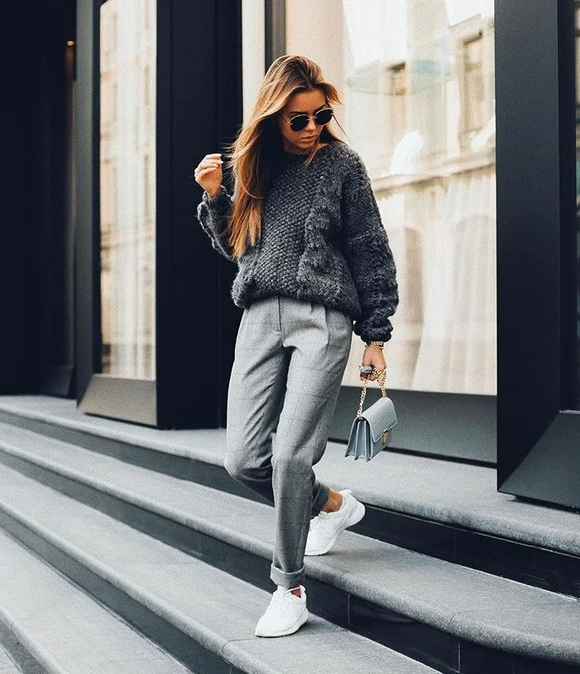
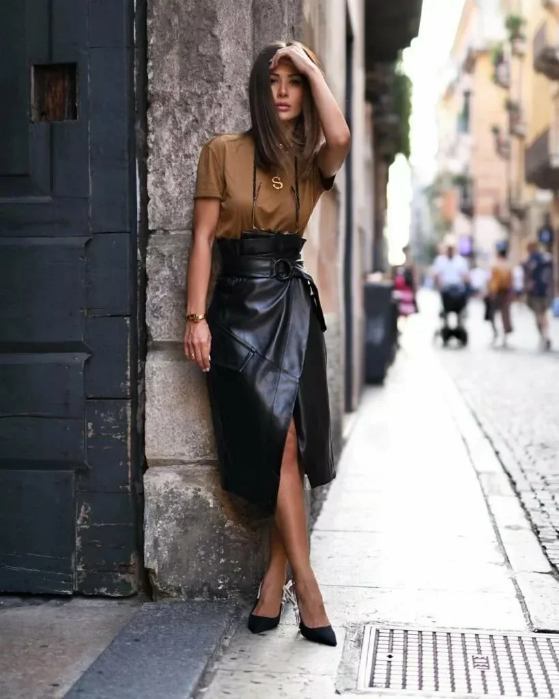
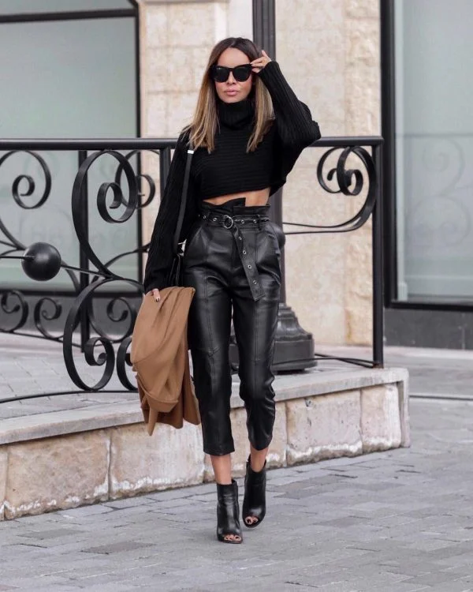

Тренды 2019 года
Cтильные идеи для прохладных деньков
Вязаный свитер и брюки высокой посадки
Сочетание вязаного свитера с брюками для осеннего лука будет универсальным повседневным вариантом. Можно остановить выбор не только на любимых джинсах, но и классических брюках с завышенной талией. С такой моделью брюк прекрасно будут смотреться свободные фасоны в стиле оверсайз и укороченные свитера.
Образ с кожаной юбкой
Осенью на пике популярности оказалась кожаная одежда, с которой можно создавать самые разные и яркие луки. Стоит уделить особое внимание образам именно с кожаной юбкой. Представлено огромное количество самых разных фасонов кожаных юбок, которые смогут удовлетворить вкус каждой модницы. В тренде модели прямого кроя, с оборками, декором молнией или пуговицами и интересные ассиммитричные кожаные юбки.
Осенний лук с кожаными брюками
Стильными остаются и осенние образы с кожаными брюками. Осенью 2019-2020 в тренде модели с высокой присобранной талией и кожаным пояском. Данные модели идеально сочетаются с белой водолазкой или блузкой, которые стоит заправить в штаны.
